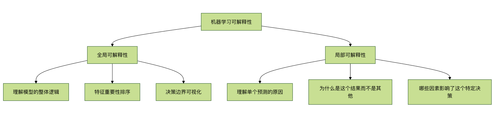
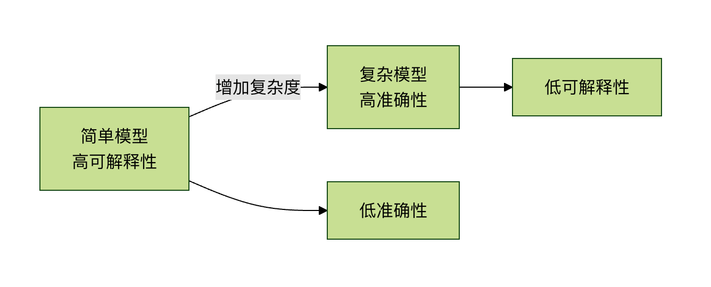

Explainability Issues
Imagine you go to see a doctor, and the doctor tells you: According to my advanced diagnostic system, you need this surgery, but I cannot explain why. Would you agree? Most people would hesitate, because we want to understand the reasons behind decisions.
In the field of machine learning, we are facing a similar dilemma. Many advanced machine learning models, especially deep learning models, are like black boxes — we can see the inputs and outputs, but it is difficult to understand how decisions are made internally. This isthe machine learning interpretability problem, which has become one of the main obstacles restricting the widespread application of AI technology in practical key fields (such as healthcare, finance, and justice).
This article will help you understand what interpretability is, why it is so important, and the current challenges and solutions.
What is machine learning interpretability?
Basic Concepts
Machine learning interpretabilityrefers to our ability to understand, trust, and effectively manage the decision-making process of artificial intelligence.
Simply put, it is the ability to answer why the model made such a prediction.
Two Levels of Interpretability

Global InterpretabilityFocuses on the overall behavior of the model:
- What patterns has the model learned?
- Which features are most important for predictions?
- What shape is the model's decision boundary?
Local InterpretabilityFocuses on individual predictions:
- Why was this sample predicted as class A rather than class B?
- If a feature value changes slightly, how will the prediction change?
- Which features contributed most to this specific prediction?
Why is interpretability so important?
1. Building Trust and Transparency
In high-risk fields such as healthcare, autonomous driving, and financial risk control, people need to know the basis of AI decisions. If a model rejects a loan application or diagnoses a disease, we must be able to explain the reasons.
2. Meeting Regulatory Requirements
The EU's GDPR (General Data Protection Regulation) explicitly stipulates that users have the right to receive "meaningful information about the logic involved". Many industry regulations require transparency in the decision-making process.
3. Debugging and Improving Models
By understanding how the model works, we can:
- Discover and correct biases in the model
- Identify spurious correlations learned by the model
- Improve model architecture and feature engineering
4. Knowledge Discovery and Scientific Insight
Sometimes, models may discover patterns that human experts have not noticed, and these insights can drive scientific progress.
5. Security and Adversarial Attacks
Understanding model weaknesses helps defend against adversarial attacks (carefully crafted inputs that cause the model to misclassify).
Different Types of Models and Interpretability
Model Transparency Spectrum
| Model Type | Interpretability | Typical Representatives | Applicable Scenarios |
|---|---|---|---|
| High Interpretability Models | 高 | Linear Regression, Decision Trees, Logistic Regression | Fields that require strong explainability, such as financial credit |
| Medium Interpretability Models | 中 | Random Forests, Gradient Boosting Trees | Scenarios that balance performance and interpretability |
| Low Interpretability Models | 低 | Deep Learning, Complex Ensemble Models | Performance-first, such as image recognition, natural language processing |
Example Comparison: Decision Tree vs Neural Network
Decision Tree (High Interpretability) Example:
Example
from sklearn.tree import DecisionTreeClassifier, plot_tree
import matplotlib.pyplot as plt
# 创建并训练模型
model = DecisionTreeClassifier(max_depth=3, random_state=42)
model.fit(X_train, y_train)
# 可视化决策树
plt.figure(figsize=(12, 8))
plot_tree(model, feature_names=feature_names,
class_names=['Not Approved', 'Approved'],
filled=True, rounded=True)
plt.title(Loan Approval Decision Tree - Fully Interpretable)
plt.show()
The advantage of decision trees is that we can directly trace the path from the root node to leaf nodes and fully understand how each decision is made.
Neural Network (Low Interpretability) Example:
Example
import tensorflow as tf
from tensorflow import keras
# 创建一个简单的神经网络
model = keras.Sequential([
keras.layers.Dense(128, activation='relu', input_shape=(10,)),
keras.layers.Dense(64, activation='relu'),
keras.layers.Dense(32, activation='relu'),
keras.layers.Dense(1, activation='sigmoid') # 二分类输出
])
model.compile(optimizer='adam',
loss='binary_crossentropy',
metrics=['accuracy'])
# 训练模型
history = model.fit(X_train, y_train,
epochs=50,
validation_split=0.2,
verbose=0)
A neural network consists of hundreds or even millions of interconnected neurons, each connection having a weight that is automatically adjusted through training. Although we can view all the weight values, it is almost impossible to understand how these numbers collectively produce a specific prediction.
Challenges Facing Interpretability
1. The Trade-off between Accuracy and Interpretability
Generally, the more complex the model and the better its performance, the poorer its interpretability. This is calledthe accuracy-interpretability trade-off。

2. Technical Complexity
Deep learning models may have:
- Millions of parameters
- Complex nonlinear transformations
- Multi-layer abstract representations
3. Human Cognitive Limitations
Even if we obtain technical explanations, they may exceed human comprehension. For example, an explanation of complex interactions involving 1000 features is difficult for the human brain to process.
4. Lack of Evaluation Standards
How do we measure the "quality" of an explanation? Currently, there is a lack of unified and objective evaluation standards.
Current Interpretability Techniques
1. Feature Importance Analysis
Example
import shap
import xgboost as xgb
import matplotlib.pyplot as plt
# 训练一个 XGBoost 模型
model = xgb.XGBClassifier()
model.fit(X_train, y_train)
# 创建 SHAP 解释器
explainer = shap.TreeExplainer(model)
shap_values = explainer.shap_values(X_test)
# 可视化特征重要性
shap.summary_plot(shap_values, X_test, plot_type="bar")
plt.title(Feature Importance Ranking)
plt.show()
# 单个预测的解释
shap.force_plot(explainer.expected_value, shap_values[0,:], X_test.iloc[0,:])
SHAP (SHapley Additive exPlanations) is based on game theory and assigns an importance value to each feature, showing the feature's contribution to the prediction.
2. LIME (Local Interpretable Model-agnostic Explanations)
Example
import lime
from lime import lime_image
from skimage.segmentation import mark_boundaries
# 创建 LIME 解释器
explainer = lime_image.LimeImageExplainer()
# 解释单个图像预测
explanation = explainer.explain_instance(
image_array,
model.predict,
top_labels=3,
hide_color=0,
num_samples=1000
)
# 显示哪些区域支持预测
temp, mask = explanation.get_image_and_mask(
explanation.top_labels[0],
positive_only=True,
num_features=5,
hide_rest=False
)
plt.imshow(mark_boundaries(temp, mask))
plt.title(Regions in the image that support the prediction)
plt.axis('off')
plt.show()
The core idea of LIME is to create a simple, interpretable model (such as a linear model) near a single prediction point to approximate the behavior of the complex model.
3. Attention Mechanism
In natural language processing, the attention mechanism can show which parts of the input text the model "attends to" when making predictions:
Example
import numpy as np
import matplotlib.pyplot as plt
def visualize_attention(text, attention_weights):
"""
Visualize attention weights
Parameters:
text: tokenized text list
attention_weights: attention weight for each word
"""
fig, ax = plt.subplots(figsize=(10, 2))
# 创建热图
im = ax.imshow([attention_weights], cmap='YlOrRd', aspect='auto')
# 设置坐标轴
ax.set_xticks(range(len(text)))
ax.set_xticklabels(text, rotation=45, ha='right')
# 添加颜色条
plt.colorbar(im)
plt.title("Attention Weight Visualization")
plt.tight_layout()
plt.show()
# Example usage
sample_text = ["I", "like", "machine learning", "'s", "interpretability", "research"]
sample_attention = [0.1, 0.15, 0.4, 0.05, 0.25, 0.05]
visualize_attention(sample_text, sample_attention)
4. Decision Boundary Visualization
For low-dimensional data, we can directly visualize the model's decision boundary:
Example
import numpy as np
import matplotlib.pyplot as plt
from sklearn.linear_model import LogisticRegression
def plot_decision_boundary(model, X, y):
"""
Plot the decision boundary of two-dimensional data
Parameters:
model: trained classifier
X: feature data (2D)
y: labels
"""
# Create mesh grid
x_min, x_max = X[:, 0].min() - 0.5, X[:, 0].max() + 0.5
y_min, y_max = X[:, 1].min() - 0.5, X[:, 1].max() + 0.5
xx, yy = np.meshgrid(np.arange(x_min, x_max, 0.02),
np.arange(y_min, y_max, 0.02))
# Predict on the entire mesh grid
Z = model.predict(np.c_[xx.ravel(), yy.ravel()])
Z = Z.reshape(xx.shape)
# Plot decision boundary and scatter plot
plt.figure(figsize=(10, 8))
plt.contourf(xx, yy, Z, alpha=0.4, cmap=plt.cm.RdYlBu)
plt.scatter(X[:, 0], X[:, 1], c=y, s=50,
edgecolor='k', cmap=plt.cm.RdYlBu)
plt.xlabel('Feature 1')
plt.ylabel('Feature 2')
plt.title('Decision Boundary Visualization')
plt.show()
# Generate sample data and train model
np.random.seed(42)
X = np.random.randn(200, 2)
y = (X[:, 0] + X[:, 1] > 0).astype(int) # Simple linear decision boundary
model = LogisticRegression()
model.fit(X, y)
plot_decision_boundary(model, X, y)
Practical Advice: How to Handle Interpretability Issues in Projects
1. Choose Strategies Based on the Application Scenario
| Application Scenario | Interpretability Requirement | Recommended Method |
|---|---|---|
| Medical Diagnosis | Very High | Use highly interpretable models, or add post-hoc explanations for complex models |
| Financial Risk Control | 高 | Feature importance analysis, decision rule extraction |
| Recommendation Systems | Medium | Attention mechanisms, recommendation reason generation |
| Image Recognition | Relatively Low | Saliency maps, activation visualization |
| Research Exploration | Variable | Choose based on the specific research question |
2. Steps to Implement Interpretability
Example
class ExplainableMLPipeline:
def __init__(self, model, feature_names):
self.model = model
self.feature_names = feature_names
self.explanations = {}
def add_global_explanation(self, method='shap'):
"""Add global explanation"""
if method == 'shap':
explainer = shap.TreeExplainer(self.model)
shap_values = explainer.shap_values(self.X)
self.explanations['global_shap'] = shap_values
# Generate feature importance plot
shap.summary_plot(shap_values, self.X,
feature_names=self.feature_names)
def add_local_explanation(self, instance_index, method='lime'):
"""Add local explanation"""
if method == 'lime':
# Simplified here; in practice, choose the explainer based on model type
print(f"Prediction explanation for instance {instance_index}:")
print(f"Predicted value: {self.model.predict([self.X[instance_index]]))
print("Key influencing factors:")
# Show the most important features and their contributions
def generate_report(self):
"""Generate interpretability report"""
report = {
'model_type': type(self.model).__name__,
'global_importance': self.get_feature_importance(),
'sample_explanations': self.get_sample_explanations(3),
'fairness_metrics': self.check_fairness()
}
return report
def get_feature_importance(self):
"""Get feature importance"""
# Implement feature importance calculation
pass
def check_fairness(self):
"""Check model fairness"""
# Implement fairness check
pass
3. Practical Checklist
Before deploying a machine learning model, ask these questions:
Technical Considerations
- Can we explain the overall logic of the model?
- Can we explain individual predictions?
- Which features have the greatest impact on predictions?
- Does the model rely on spurious correlations?
Ethics and Compliance Considerations
- Does the model have bias? Against which groups?
- Does it comply with relevant regulatory requirements?
- Can users receive meaningful explanations?
- Is there a mechanism to correct erroneous predictions?
Practical Considerations
- Can the explanations be understood by domain experts?
- Do the explanations help improve the model?
- Do the explanations support decision-making?
- Are explanations for key decisions documented?
Future Outlook and Research Directions
1. Development of Intrinsically Interpretable Models
Researchers are developing new model architectures that are both powerful and interpretable, such as:
- Neuro-symbolic systems: Combining neural networks with learning rules
- Interpretable neural networks: Designing networks with transparent structures
- Capsule networks: Providing better hierarchical representations
2. Standardization and Evaluation Frameworks
The industry needs:
- Standardized metrics for interpretability evaluation
- Objective methods for measuring explanation quality
- Consistency validation of different explanation methods
3. Human-AI Collaborative Explanation Systems
Future systems may:
- Provide explanations at different levels based on user background
- Support interactive exploration and questioning
- Combine domain knowledge to generate more meaningful explanations
4. Automation of Interpretability
Development directions for tools:
- Automatically select the most suitable explanation method
- Generate explanations in real time without excessively impacting performance
- Personalized adaptation of explanations
Summary and Key Points
Interpretability is not optional: In high-risk domains, interpretability is a necessary condition for deploying AI systems.
Trade-offs are real: A wise trade-off between accuracy and interpretability must be made based on the application scenario.
The toolbox is rich: From SHAP and LIME to attention mechanisms, there are multiple techniques to improve model interpretability.
The process is systematic: Interpretability should span the entire machine learning lifecycle, from data collection to model deployment.
The future is bright: As research deepens, we are developing new methods that are both powerful and interpretable.
Advice for Beginners
If you are a beginner in machine learning:
- Start with interpretable models: First master interpretable models such as linear regression, logistic regression, and decision trees
- Understand the basics before advancing: After understanding how simple models work, then learn complex models
- Practice explanation techniques: Use tools like SHAP and LIME to explain your models
- Cultivate critical thinking: Always ask "Why did the model make this prediction?"
Machine learning interpretability is not only a technical issue, but also a bridge connecting artificial intelligence with human trust. As technology advances, we are moving toward more transparent and trustworthy AI systems, which will enable machine learning to play an important role in more critical domains.
Practical Exercises
Exercise 1: Comparing the Interpretability of Different Models
Use the Iris dataset to compare the interpretability of different models:
Example
from sklearn.model_selection import train_test_split
from sklearn.linear_model import LogisticRegression
from sklearn.tree import DecisionTreeClassifier
from sklearn.ensemble import RandomForestClassifier
import shap
# Load data
iris = load_iris()
X_train, X_test, y_train, y_test = train_test_split(
iris.data, iris.target, test_size=0.2, random_state=42
)
# Train different models
models = {
'Logistic Regression': LogisticRegression(max_iter=1000),
'Decision Tree': DecisionTreeClassifier(max_depth=3),
'Random Forest': RandomForestClassifier(n_estimators=100)
}
# Generate explanations for each model and compare
for name, model in models.items():
model.fit(X_train, y_train)
accuracy = model.score(X_test, y_test)
print(f"{name} - Accuracy: {accuracy:.3f}")
# Try to explain (using feature importance as an example here)
if hasattr(model, 'feature_importances_'):
print(f" Feature importance: {model.feature_importances_}")
elif hasattr(model, 'coef_'):
print(f" Coefficients: {model.coef_}")
Exercise 2: Using SHAP to Explain a House Price Prediction Model
Example
from sklearn.datasets import fetch_california_housing
from sklearn.ensemble import RandomForestRegressor
import shap
import matplotlib.pyplot as plt
# Load the California housing dataset
housing = fetch_california_housing()
X = pd.DataFrame(housing.data, columns=housing.feature_names)
y = housing.target
# Train model
model = RandomForestRegressor(n_estimators=100, random_state=42)
model.fit(X, y)
# Use SHAP to explain
explainer = shap.TreeExplainer(model)
shap_values = explainer.shap_values(X)
# 1. Feature importance summary
plt.figure(figsize=(10, 6))
shap.summary_plot(shap_values, X, plot_type="bar")
plt.title("Feature Importance for California Housing Price Prediction")
plt.tight_layout()
plt.show()
# 2. Individual prediction explanation
sample_idx = 10 # Select a sample
print(f"Actual house price for sample {sample_idx}: ${y[sample_idx]:.2f}k")
print(f"Predicted house price for sample {sample_idx}: ${model.predict([X.iloc[sample_idx]]))
shap.force_plot(explainer.expected_value,
shap_values[sample_idx,:],
X.iloc[sample_idx,:],
matplotlib=True)
Click to Share Notes
<p style="font-size:14px;">Notes should be an extension of the content of this article!</p><br> <p style="font-size:12px;"><a href="../tougao.html" target="_blank">Submit an article, click here</a></p> <p style="font-size:14px;"><a href="../w3cnote/runoob-user-test-intro.html" target="_blank">How to get a registration invitation code</a></p> <h3 class="text-muted"><i class="fa fa-info-circle" aria-hidden="true"></i> You must <a href=";.html" class="runoob-pop">log in</a> before sharing notes!</h3> <p><a href="../w3cnote/runoob-user-test-intro.html" target="_blank">How to get a registration invitation code</a></p>